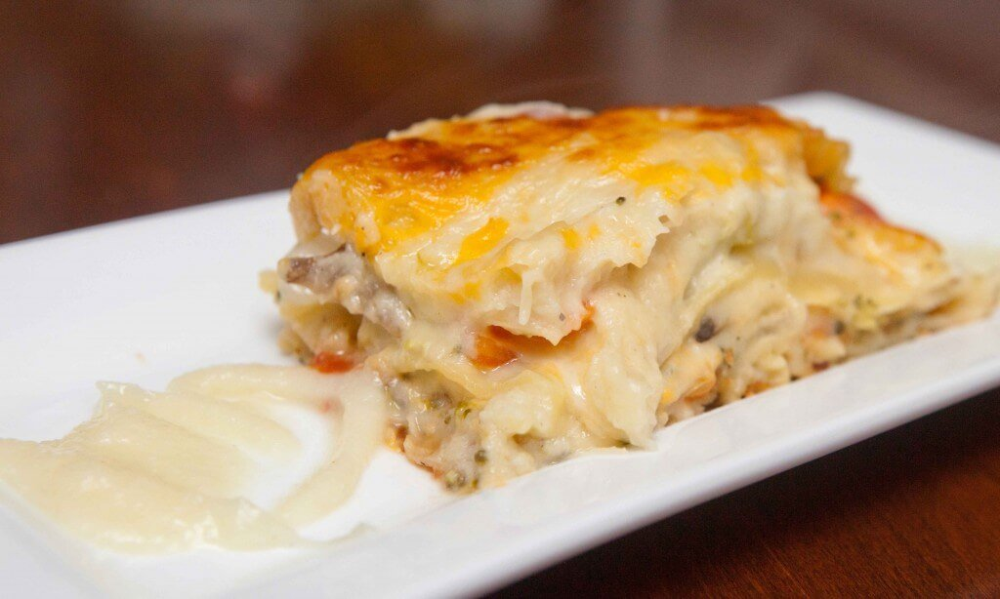

White Sauce Lasagna

- Large oven-safe rectangular casserole dish
- One yellow onion (large)
- Cooking oil of choice (olive)
- Couple cloves of garlic
- 1.5lb of ground beef (any %, we use lean)
- 2 ~14.5 oz cans of petit cut tomatoes
- Salt
- Pepper
- 1.5 tbsp of chopped dried basil leaves
- 2 tbsp of butter
- 3 cups of milk
- 2.5 tbsp of flour
- 4 cups of mozzarella cheese, shredded
- Aluminum foil
- (Optional) Ketchup or two tbsp of tomato paste
- (Optional) Parmesan, shredded or grated
Meat Sauce
- Chop onion and garlic very finely.
- Sauté garlic and onion until soft in large pot, using cooking oil of choice on high heat.
- Add in ground beef, stirring until cooked thoroughly.
- Add ~2 cans of petit cut tomatoes.
- Add ~1.5 tbsp chopped dried basil leaves, add salt and pepper to taste.
- Cover and simmer on medium-low heat ~20-25 minutes until some (not all) of the liquid has boiled off.
- (Optional) Add two tbsp of tomato paste (or squeeze of ketchup) to thicken.
White Cheese Sauce
- Melt ~2 tbsp of butter in medium pot on low-medium heat.
- Add in ~2.5 tbsp of flour and stir thoroughly.
- Adding in a small pour of milk at a time, on low-medium heat, stir vigorously to incorporate the milk into the butter-flour mixture. Do this one small pour at a time until all 3 cups of milk are incorporated.
- ‼️ Take your time! Make sure that the milk that is poured into the pot a little bit at a time is well-incorporated before next small pour of milk, to prevent unwanted clumping. It should become easier to incorporate the milk into the butter-flour mixture after a few rounds.
- Once all the milk is used, bring the pot to boiling point, then turn the heat down as to not boil over, then simmer for ~3 minutes.
- Add ~2.5 cups of mozzarella and stir.
- Once the cheese is incorporated, add salt to taste.
- Keep on low and stir, as to not let the sauce film over if you are still working on boiling the lasagna strips.
Lasagna
- Boil large pot of water.
- Add salt and olive oil to taste.
- Boil 9-12 pieces of lasagna strips. Follow directions on the box.
Assembly
- Preheat oven for 400 °F
- Carefully add ~1/3 of cheese sauce on bottom of the dish, using a ladle.
- Add one layer of lasagna strips over the cheese sauce.
- Add half of the meat sauce over the lasagna strips.
- Add one layer of lasagna strips over the meat sauce.
- Add the rest of the meat sauce over the lasagna strips.
- Add one layer of lasagna strips over the meat sauce.
- Ladle in rest of sauce over the meat sauce, making sure the whole dish is covered.
- Spread ~1.5 cups of mozzarella on top evenly.
- Sprinkle parmesan on top.< /li>
- Cover with foil.
- Cook for ~20-25 minutes at 400 °F.
- Take off foil and cook for ~10 minutes or until slightly browned.